Using Bode plots in Schematic Editor to troubleshoot converter design issues
Demonstration on how to use Python-specific libraries (such as scipy) to resolve issues with designing power converter controls.
Introduction
In electric drive applications, rectifiers are prone to DC voltage overshoot issues. In this case, we will attempt to test the potential occurrence of these issues using an uncontrolled Three Phase Diode Rectifier, as shown in Figure 1. The input impedance can be calculated and introduced in the model by a Bode diagram. This peak of the DC link voltage can lead to burning of the diodes in the three-phase diode rectifier and burning of the IGBTs in the Three Phase Inverter if they are not rated for overshoot voltages.
Model description
The model of the rectifier part of the drive system is presented in Figure 1.
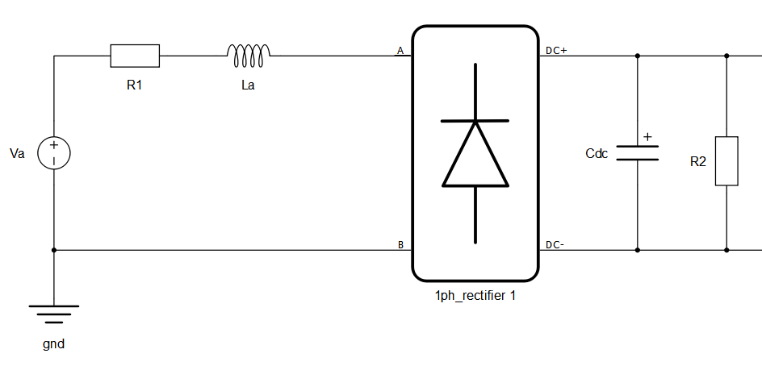
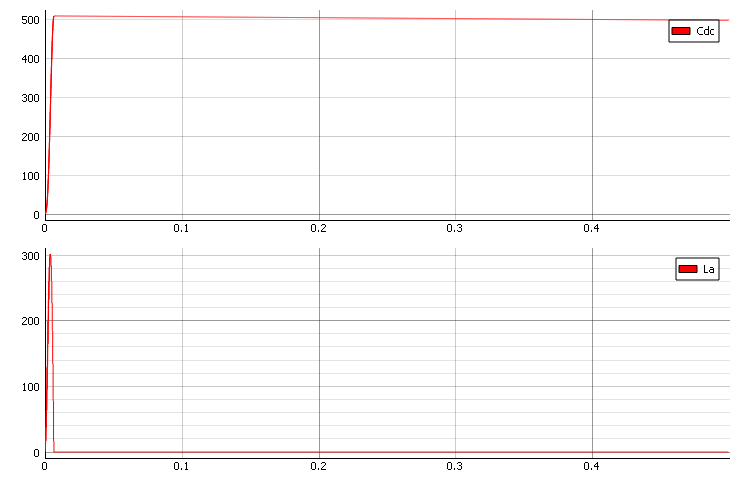
Using the Model Initialization function in the code block below, we can generate a Bode diagram using the scipy and matplotlib python libraries. The most important functions from the scipy library are scipy.signal.TransferFunction and scipy.signal.bode.
The model initialization script is shown below:
# Numpy module is imported as 'np'
# Scipy module is imported as 'sp'
import matplotlib.pyplot as plt
#parameters that chan be changeable
Rprech = 0
Ts = 100e-6
R = 0.1
L = 0.0011
C = 0.0022
RloadAnalys = 100
#Solution no. 1: fix with inductor
#L = C * R**2 *0.9**2
#mdl.info(L)
#Solution no. 2: fix with capacitor
#fsw = 100
#C = 1/(2*np.pi*0.3*fsw)**2/L
#mdl.info("C = {} F".format(C))
#Solution no. 3: add precharge resistor Q = 0.707
Rprech =np.sqrt(2)*(np.sqrt(L/C)-1/np.sqrt(2)*R)
mdl.info("Rprech = {} ohm".format(Rprech))
#bode diagram analysis
# resonant frequecny
f0 = 1/(2*np.pi*np.sqrt(L*C))
mdl.info("f0 = {} Hz".format(f0))
w0 = 2*np.pi*f0
# absolute Q factor
Qab = 1/(R+Rprech)*np.sqrt(L/C)
mdl.info("Qab = {}".format(Qab))
Qdb = 20 * np.log10(Qab)
# Q factor in db
#bode plot using sp.signal.lti function
s1 = sp.signal.lti([1],[1/w0**2,1/(w0*Qab),1])
w, mag, phase = sp.signal.bode(s1)
# Bode magnitude plot
#plt.figure()
plt.semilogx(1/(2*np.pi)*w, mag)
# Bode phase plot
plt.figure(1,1)
plt.semilogx(1/(2*np.pi)*w, phase)
plt.show() 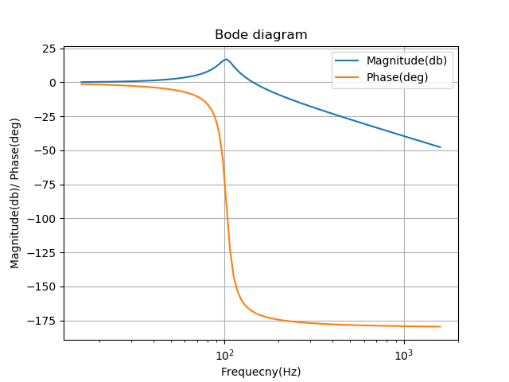
From this Bode diagram and from calculation, we get . We can see that the switching resonant frequency and the switching frequency of the diode bridge (100 Hz) is almost the same. This implies there will be some resonance and overshoot in DC voltages. The switching frequency also cannot be changed because of the use of a diode rectifier. Instead, changing the parameters of input impedance is necessary. Since increasing model resistance (R) will lead to increased losses, it is better to focus on the inductor by decreasing the quality (Q) factor.
Simulation
In this section we explore two possible solutions for addressing the voltage overshoot on the DC link: decreasing the inductance and increasing the capacitance.
Solving the issue decreasing the inductance
First let’s try to find the input transfer function. The transfer function is defined from the circuit in Figure 1.
An alternative standard, normalized form of the transfer function is:
The parameter Q is called the quality factor of the circuit, and is a measure of the dissipation in the system. The parameter represents the resonant angular frequency.
From the input transfer function, we can find the resonant frequency which is:
Now it is easy to find the Q factor with the following formula:
The result of this analysis will give us the value of the inductor to reduce the Q factor. Let’s try to decrease value of the inductor by half. In Figure 4, we can see that we manage to decrease the overshoot of the DC voltage.
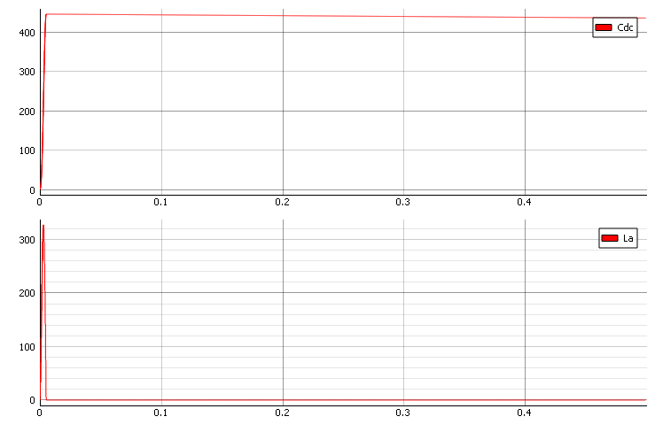
Now, let’s try to decrease inductance to one third. In Figure 5, we can see that we manage to decrease the DC voltage (Cdc) below our 400 V target.
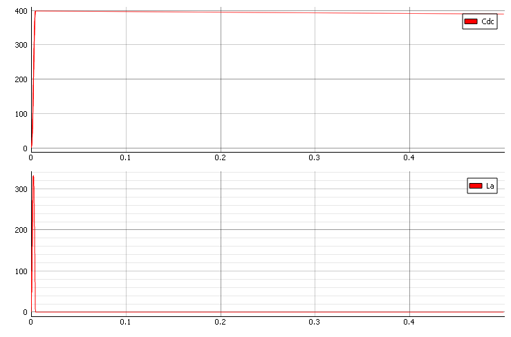
A second-order Butterworth filter (i.e., continuous-time filter with the flattest passband frequency response) has an underdamped quality factor of 0.707. Therefore, to reduce overshoot in the voltage of the DC capacitor you need to set the Q factor to 0.707. Now, let’s try to calculate the inductor. The equation is where we can calculate .
In Figure 6, we can see that we manage to fix this issue.
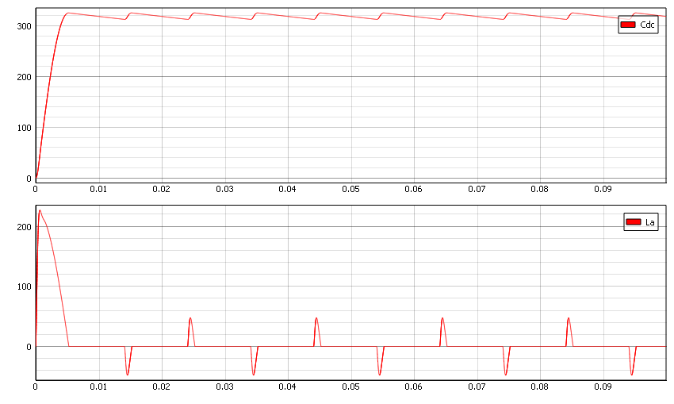
In the Bode diagram in Figure 7, we can see that we manage to decrease the Q factor.
Solving the issue with increasing the capacitor
While in theory decreasing the inductance solves the problem, it is often not practical, since inductors are much more expensive then capacitors. Additionally, if the inductance in the model is due to the source inductance (i.e. grid impedance), it is impossible to change it. In these cases, we can instead change the value of the capacitor. This is done by moving the resonant frequency far from the switching frequency. For example, by setting :
With this new capacitor, we get attenuation to the switching frequency. In Figure 8, you can find the new Bode diagram.
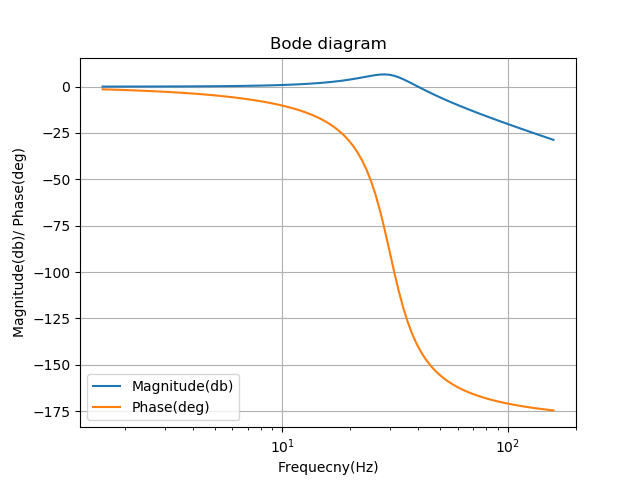
In Figure 9, we can see the new response of voltage on the DC link. By increasing the DC capacitor, we can see that response is a little bit slower than when we changed the inductance.
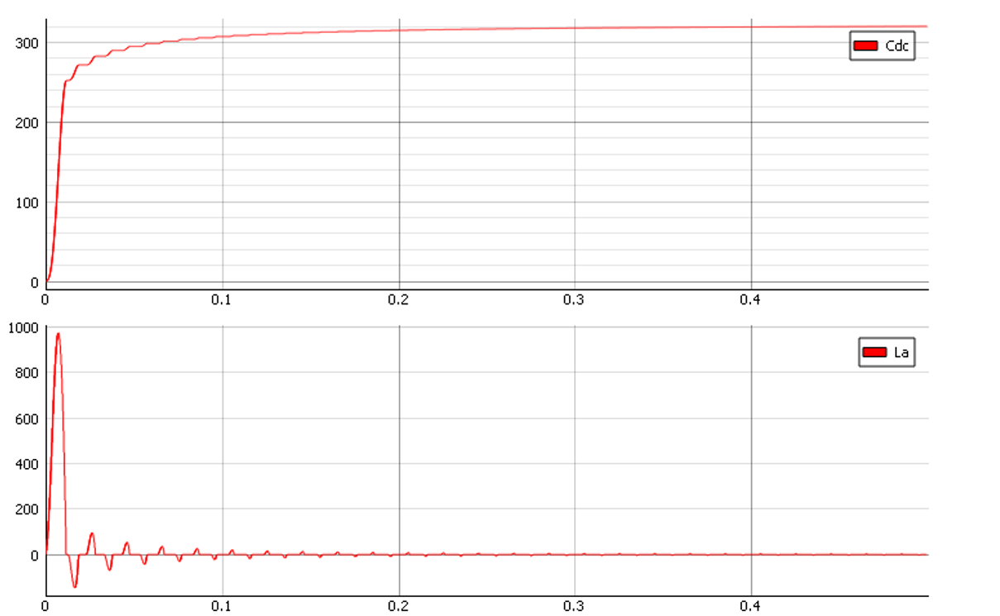
Pre-charge circuit
Overvoltage on DC-link can be resolved using pre-charge circuit. In Figure 10, you can see implementation of pre-charge circuit.
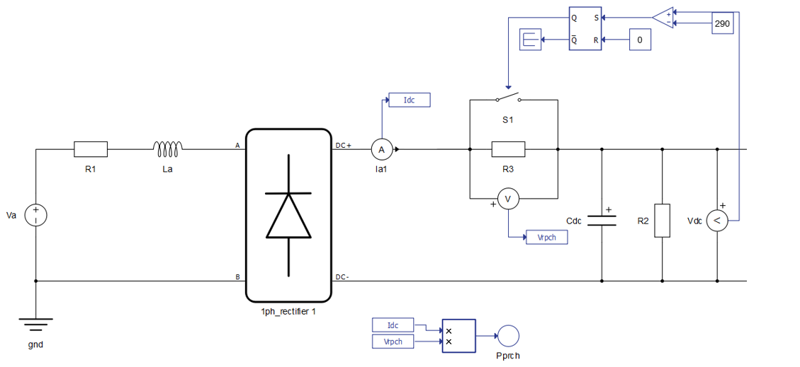
In this case, the pre-charge resistor can be calculated by setting the Q factor:
The following is the calculation for
Figure 11shows the pre-charge resistor effects caused by reducing the Q factor. The Figure 12 shows the response of voltage on DC-link. It is important to note that in this case there is a reduced peak of incoming current on the AC side of rectifier.
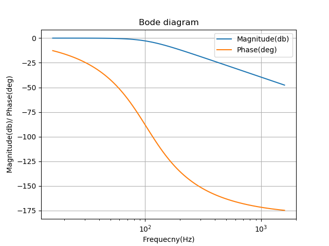
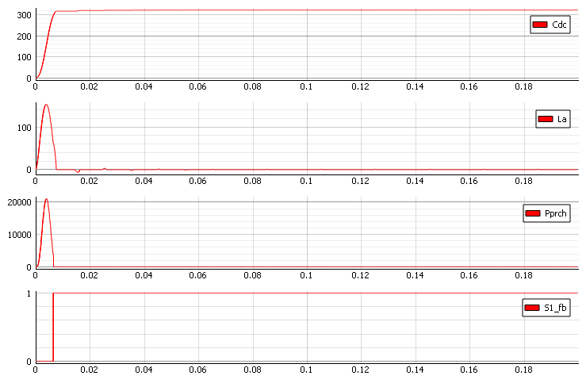
Using this approach, we manage to troubleshoot issues in the design of the various converters and applications in power electronics, and specifically to avoid voltage overshoot on the DC link. In Figure 12, you can see a high peak of the inductor current. To reduce this current, we need to define a different value of the pre-charge resistor. The resistance of the pre-charge circuit is chosen based on the capacity of the load and the desired pre-charge time. The pre-charge surge current reaches 1/e of its initial value after a time of:
The current is reduced to a manageable value after approximately a time of 5 * T.
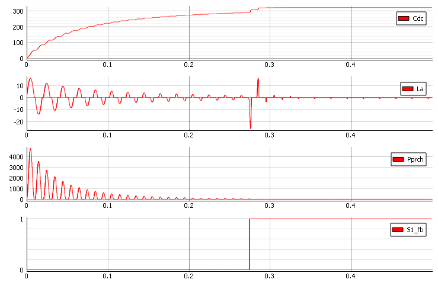
Here we can see how we manage to decrease inrush current.
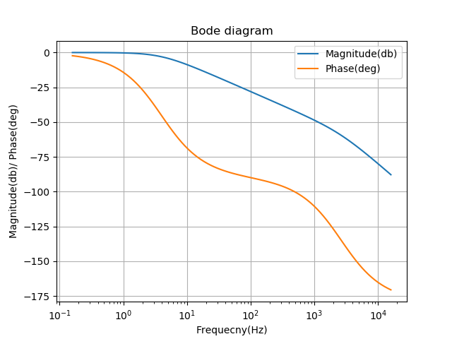
In practice, if the design allows, having the option to solve overvoltage by placing a larger capacitor, would likely be a cheaper option than adding the pre-charge circuit. Based on these results, we can envision a way that this would be possible.
Test Automation
We don’t have a test automation for this example yet. Let us know if you wish to contribute and we will gladly have you signed on the application note!
Example requirements
Table 1 provides detailed information about the file locations and hardware requirements for running the model in real-time, followed by the HIL device resource utilization when running the model using this minimal hardware configuration. This information is provided to help you with running and customizing the model as you see fit.
| Files | |
|---|---|
| Typhoon HIL files | TMS320F2808 Example Models/ti pmsm sensored foc* ti pmsm sensored foc.tse ti pmsm sensored foc.cus 20140220_pmsm3_1_TMS3202808.out settings.runx *Downloadable via Package Manager |
| External Tools | UniFlash |
| Minimum hardware requirements | |
| No. of HIL devices | 1 |
| HIL device model | HIL402 |
| Device configuration | 1 |
| Interface |
TMS320F2808 (Hardware under test) |
| HIL device resource utilization | |
| No. of processing cores | 2 |
| Max. matrix memory utilization | 2.25% (core0) 30.81% (core1) |
| Max. time slot utilization | 29.38% (core0) 52.5% (core1) |
| Simulation step, electrical | 1 µs |
| Execution rate, signal processing | 100 µs |
Authors
[1] Simisa Simic